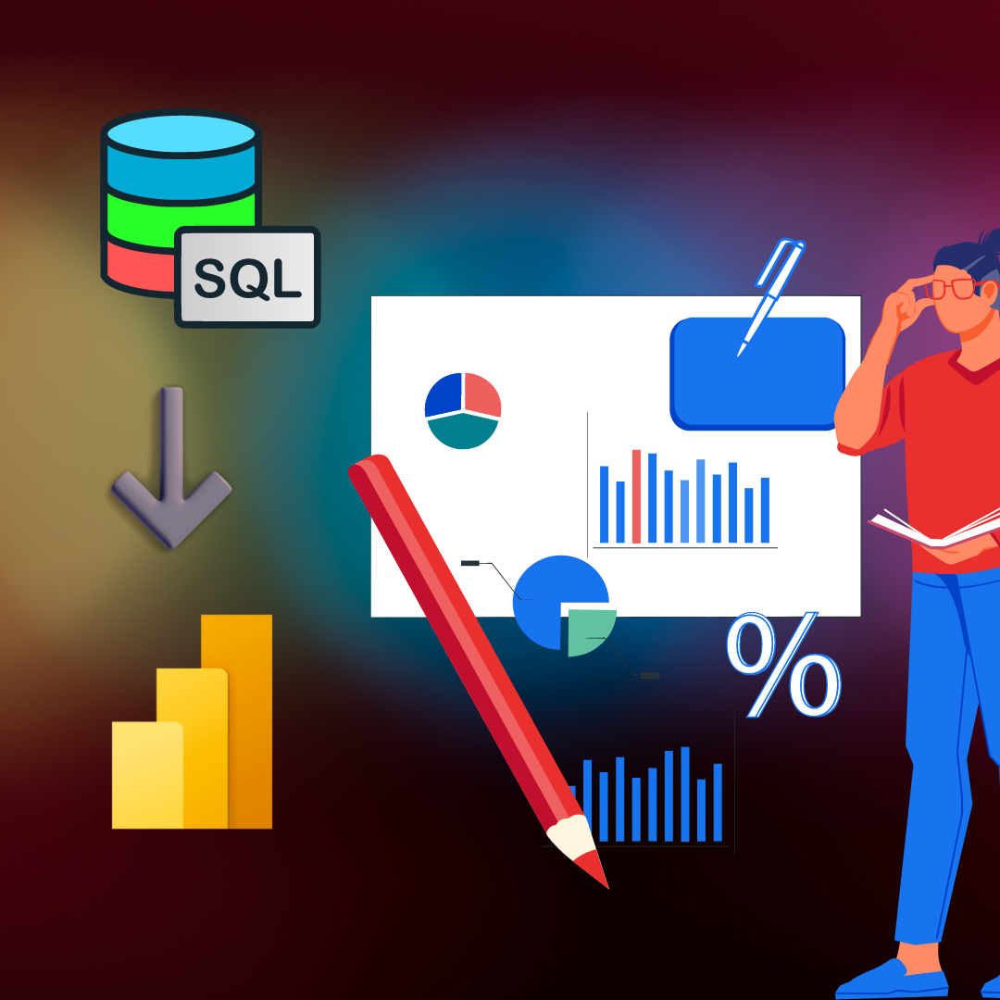

In this project, we had to understand ticket trends of an IT company and forecast staffing/resource requirements,
based on factors like monthly tickets created, tickets closed, product failures, shift patterns, product usage, etc. We use Python
for ETL, pre-processing, EDA, and finally use ML algorithms to train the model, to achieve the business requirements
The end goal is to forecast the staffing requirement even before an incident takes placse, based on the product usage history
This dataset is obtained from Kaggle. It consists of multiple features which are
recorded during diagnosis of patients and which are then used to find the probability
of a person having a heart attack;
The target outcome is : 0 => Low probability OR 1 => High Probability
In this project, I am trying to analyse the data and understand the features, to predict flight ticket prices.
There are multiple features in this dataset like, Date, Source, Destination, Stops, Route, and Price.
The end goal is to do EDA and find key insights about each feature, treating the variables, choose regression training models
and use hyper parameter tuning, to create a robust model that accurately predicts the prices of tickets given the mentioned features

I have used Power BI to create a detailed revenue analysis dashboard for a hypothetical manufacturing company to provide
insights from the sales data, like most profitable products, monthly taget acheivements,
monthly changes in revenue acheivements, pricing-discount model and its impact.
I have used Power Query editor, DAX, to come up with a detailed analysis
In this project, I have tried to create a model which will predict the sentiments of comments, on internet
giants like Amazon and Twitter.
The model is created using NLP method to extract and clean the data,
plot WordClouds, and then using various classification models like Random Forest
Classifier, Gradient Boost etc.
Target outcome is to classify a comment as 0 : Negative Comment, 1: Positive Comment
Using raw data from Covid report, I have tried to clean the data, perform feature extractions
using SQL. Further, I have generated several tables like total_cases vs population,
highest infection rate by countries, and also by contients.
I have also used vaccination report, perfomed SQL join to draw insights, like
country/state level infections and vaccinations, rolling values about people
vaccinated per day etc.
Using these tables, to plot a dashboard in Tableau,
which shows this data at a global level
ABC Chains owns multiple five-star hotels across India. They have been in the hospitality industry for
the past 20 years. Due to strategic moves from other competitors and ineffective decision-making in management, they are losing its market share and revenue in the
luxury/business hotels category.
Their revenue management team had decided to hire a 3rd party service provider to provide them with insights from their historical data.
Task:
Create the metrics according to the business requirements, with Week Over Week % changes
Create a dashboard according to metrics provided by stakeholders.